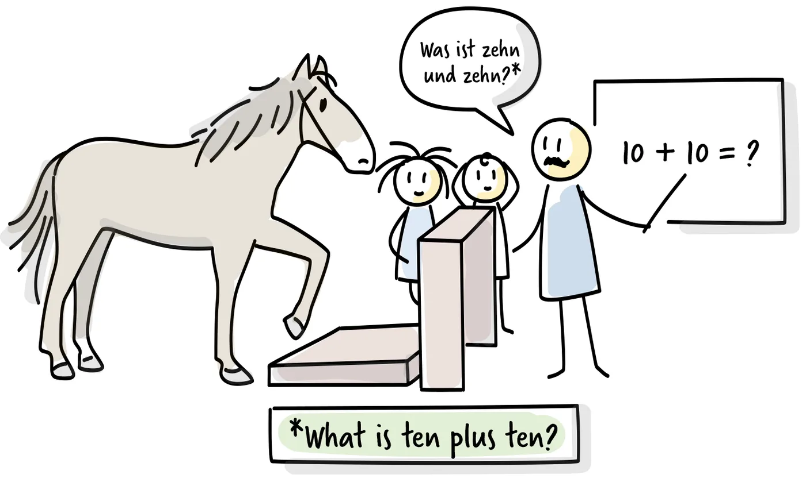

The story of Clever Hans

Observation has pitfalls, especially because we want to include our interpretations of dynamics and patterns, not only objective facts. This makes us vulnerable to cognitive biases. The story of Clever Hans shows how much difference observation can make.
Hans was a horse in Germany in the early twentieth century, thought to be intelligent enough to understand spoken language and do basic arithmetic. Asked to add ten and ten, he would tap his hoof twenty times. Psychologists tested him extensively and found that Hans was picking up on the body tension of the person asking and of the crowd around him. He could sense when people expected him to stop tapping. Hans was clever, but not for the reasons people thought. Of everyone present, he was the only one interpreting his observations correctly.
Cognitive biases
The people studying Clever Hans fell prey to the observer expectancy effect, in which our own ideas and preconceptions lead to particular behaviour in those we observe. In another example, psychologist Robert Rosenthal found that telling teachers that some students had great potential and others did not caused the teachers to behave, unconsciously, in ways that produced those results.
Other biases can influence our interpretation or even the outcome of an observation. With the halo and horn effects, one unrelated trait distorts our overall judgement of a person, positively or negatively. With transference and counter-transference, one person's positive or negative traits are projected onto another. Both can affect how we interpret what we see, how we behave around those we observe, and how they behave around us.
There are many more such effects. They are largely unconscious, so we may not notice them or be able to counter them. As the case of Clever Hans shows, our presence alone tends to influence what we observe. We need to be aware that these biases exist and find ways to work around them. After recording our observations, the next step is to form plausible hypotheses by asking "Why is this happening?" Hypotheses help us explain what we have seen and challenge our assumptions about what we think we are seeing.
Creating hypotheses
Hypotheses try to explain why certain behaviour occurs and what it means. Not every observation leads to a clear conclusion, but the aim is to collect enough information to form coherent hypotheses.
Observations of practices and processes can reveal misaligned principles and values that are not otherwise visible, and give a starting point for goals. Similarly, observing interactions closely can reveal dynamics between individuals or teams, and behaviour or tensions we may want to address.
Even with many observations, we can fall into further traps. Confirmation bias means focusing mainly on observations that confirm our own hypothesis. So we aim to validate, or better, to invalidate our hypotheses, by looking specifically for observations that could disprove them, before we build on them. Hypotheses can change quickly as we observe different situations.
Observing, forming hypotheses, testing them and turning them into goals is a cycle. Whenever we find information that contradicts a hypothesis, we start the loop again. This makes observation the foundation of the whole coaching approach.
As observers, we need to take ourselves out of the picture and observe with humility, genuine curiosity and patience. To understand someone else's behaviour, we need empathy to put ourselves in their position, especially when we are trying to notice what a person is feeling.
Challenging your own view
Forming hypotheses carefully and trying to invalidate them goes a long way to countering our own assumptions and expectations. But cognitive biases are usually unconscious and can rarely be avoided entirely. That is why help from someone who can challenge our observations is so valuable: it uncovers biases we would not catch on our own.
Comparing notes with other coaches and discussing each other's hypotheses works like quality control through peer review. It also helps to seek support from peers when a situation starts to frustrate you. Just as teams get caught in unproductive patterns, we can get stuck in our own negative loop, and a fresh perspective can help us out.
Practice
Observations and hypotheses. Capture observations about a challenge you are currently facing. Formulate hypotheses that might explain them, and decide how you could invalidate or validate each one. Then discuss your hypotheses with a colleague. Which other hypotheses can they think of?
Further reading
- Pfungst, O.: Clever Hans (The Horse of Mr. von Osten). The original study of Clever Hans from 1907.
- Kahneman, D.: Thinking, Fast and Slow. A thorough introduction to cognitive biases and how they affect judgement.